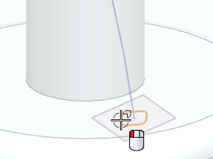
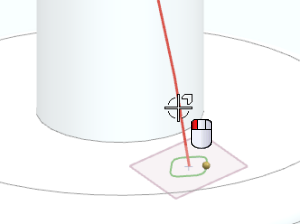
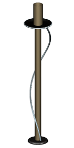

Create a sweep surface using the helix
-
Zoom in on the square sketch with the rounded corners at the base of the vertical lamp rod.
-
Choose Insert→Sweep→Sweep along Guide.
-
Select the sketch.

-
Click the middle mouse button to advance to the Guide group.
-
Select the helix as the guide curve.

-
Click OK.
-
On the View toolbar, click See-Thru All
 .
.
